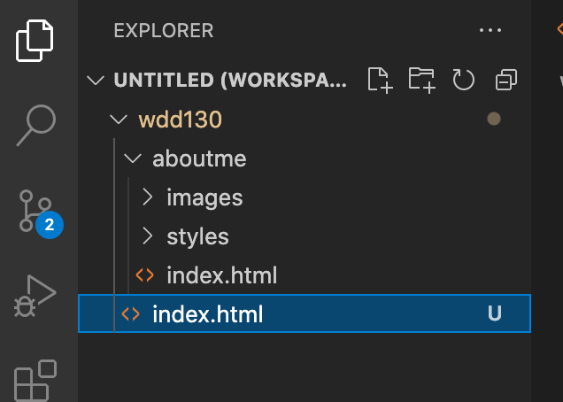

WEB Fundamentals
WDD 130
W02: GitHub Pages Hosting Setup
Overview
- Task: Setup hosting for your webpages.
- Purpose: Prepare a place to store your website to be seen live on the Internet.
Background
We will continue setting up a way to get our web pages live on the web. Last week we learned how to create pages using the Microsoft Visual Studio Code editor. Now we will continue by learning how to upload our files to GitHub. Then from there they can be seen on GitHub Pages. We can then share the website with an instructor or fellow students for collaboration.
Again, like last week, there are a number steps we will need to go through to get everything set up. You will be installing and setting up Git, GitHub, and GitHub Pages.
If you aren’t familiar with Git there is a 'What is Git?’ video you can watch, but basically Git keeps track of your project folder as you make changes to any of the files. You can commit to these changes, or decide you want to keep them, and then transfer or push our files to our project that is stored on GitHub servers. We will refer to the folder with all our project files as a repository or repo. That is a huge simplification of Git and Repositories, but we really aren’t going to go super in-depth with versioning control in this beginning level course. We are mainly using GitHub Pages because it’s a nice, free way to publish our website so it can be live on the Internet without having to pay for hosting or a domain.
Instructions
Each list of steps is followed by a video demonstrating the same steps. Follow each step in the order they are presented here.
-
Sign up for a GitHub Account:
- Visit the Github.com website.
- Click the 'Sign Up' button.
- You'll enter an email. Your BYUI email is a good one to use here. Then click 'Continue'.
- Create a password that has to be at least 15 characters or 8 characters with a number and lowercase letter. Then click 'Continue'.
- Enter a username. Use a professional name since this username will show up in the domain of your web projects. You might show these links to future prospective employers. If you get a red 'X' to the left of your username, then someone else has already used that username and you need to choose a different one. Don't forget the email, password, and username you used for this new GitHub account. We will need them later.
- Enter 'n' for the next step unless you want email from them.
- At this point it wants to make sure you are human and it has you solve a few simple puzzles. Click 'Start puzzle' and follow the directions. Click 'Create account'.
- It will send a launch code to the email you listed. Use that launch code and enter it.
The following video demonstrates the steps above. The last bit of the video should just show the launch code getting entered. You can just keep the account open on your browser while you go on to the next steps in the setup process.
-
Install Git on our computer
Click on and Follow only the Windows, Mac, or Linux Instructions.
- Before downloading, check to make sure you don't already have Git installed on your computer
- Click on the 'Start' window icon on your computer in the bottom left of your screen.
- Type 'cmd' to open the Command Prompt app. You should get the Command Prompt terminal to open. It doesn't matter what your prompt path is.
- Type in
git --version
and hit enter. - To install Git for Windows. Go to git-scm.com/downloads and click on 'Windows' under Downloads. An .exe file should be downloaded.
- Click that .exe file to open it and it will begin the process of installing Git.
- Allow it to make changes to your device.
- Click 'Next' through all of the setup windows leaving all the defaults as they are. There will be quite a few windows.
- The last window will let you click 'Install' and click 'Finish'.
- Open up a new Command Prompt window by closing the first Command Prompt window and start a new one by typing 'cmd' at the Windows start button in the bottom left of your screen again. At the prompt, type:
git --version
again if you want to see that it installed. You should now see the version number. (If you don't use a new Command Prompt window, you could get the same message you had before you installed Git.) - The command is listed below, but make sure you use your own username and email between the "" quotes. Use the username and your email you used for the GitHub account. It will be different for everyone. Type:
git config --global user.name "yourusername"
and then hit enter. Nothing will happen if you did it right. And then type:git config --global user.email "youremail@byui.edu"
and then hit enter again. - Before downloading, check to make sure you don't already have Git installed on your computer
- Click 'Search' icon (looks like an magnifying glass) on your near the top right of your screen.
- Type in terminal and open the Terminal app. It doesn't matter what path our command prompt is showing. All the commands we type will work anywhere.
- Type in
git --version
at the prompt and hit enter. - You should now either see a git version number come up or a pop up window that says something about 'The git command requires the command line developer tools...'. If you have a version number come up, you already have git installed and you don't need to install it. (But you will want to set your config setting as shown below.) If you get the message then click install.
- The installation may take quite a few mintues. You will get a set of development tools which includes git.
- Type in
git --version
at the prompt and hit enter. You should now see the version number. - The command is listed below, but make sure you use your own username and email between the "" quotes. Use the username and your email you used for the GitHub account. It will be different for everyone. Type:
git config --global user.name "yourusername"
and then hit enter. Nothing will happen if you did it right. And then type:git config --global user.email "youremail@byui.edu"
and then hit enter again.
You should now either see a git version number come up or a message that says something about how 'git' is not recognized. If you have a version number come up, you already have git installed and you don't need to install it. If you get the message that git is not recognized then you need to install it.
While we are still in the Command Prompt we will type in two more commands to set up our username and email that are associated with our GitHub account. Again it doesn't matter what the path prompt is. These are global settings so you can type them from any path prompt.
Now you have configured your Git to recognize your GitHub later.
While we are still in the Command Prompt we will type in two more commands (or configuration settings) to set up our username and email that are associated with our GitHub account. Again it doesn't matter what the path prompt is. These are global settings so you can type them from any path prompt.
Now you have configured your Git to recognize your GitHub later.
Linux Git InstallInstall Git with the link above and then follow the last few steps from the Windows or Mac instructions to set up your global config username and email settings to match your GitHub account.
-
Set up Visual Studio Code with Git and GitHub
Our wdd130 folder will hold all our files and resources for all our projects and keep track of any changes we make. When we are ready, we want to then transfer the local files to our remote GitHub account.
Before you start, make sure you have the previous step completed with Git installed and your git config username and email settings done.
Let's use the folder we set up last week called 'wdd130' to become a repository in GitHub so we can eventually see our website online.
Remember we already had the 'about_me' folder within wdd130 that contained our aboutme project. We had an index.html file and folder(s). The images folder had an image file in it.
- Make sure the wdd130 folder is open in VSCode if it's not already open.
- Click the 'Source Control' icon in VSCode. (It's the 3rd one from the top on the left.)
- Click the blue button that says 'Publish to GitHub'.
- Click 'Allow' if you get a message saying 'The extension 'GitHub' wants to sign in using GitHub.'
- If you are prompted for an authorization for Visual Studio Code to Access GitHub, click 'Continue'.
- If you are asked to allow the page to open 'Visual Studio Code', click 'Allow'.
- You may also be asked to allow an extension to open this URI, click 'Open'.
- VSCode will choose the folder you have open, the wdd130 folder as the the repository and give you the option to 'Publish to GitHub public repository'. Choose the one that says 'public', not 'private'. This will make a new public repository in our GitHub account.
- It will show a list of all the files in the wdd130 folder. They will all be selected by default so just click 'OK' to include all files in the new respository.
- If you get a message asking if you'd like to periodically run fetch you can say 'Yes'.
- You can see in your GitHub account the new repository there and the files there that now mirror the files in the wdd130 folder you have on your computer
- Now we will only have to 'push' any changes or additions to GitHub.
The following video demonstrates the steps above.
-
Starting our Home Page and Setting up GitHub Pages
Let's start a new index.html page (Home Page) inside our repository and then get that page to show up live on the Internet. We're almost there. Hang in there.
- In VSCode open the Explorer panel and add a file to the wdd130 folder called index.html. This index.html is different from the index.html inside of aboutme. It will be the home page of our entire repository (wdd130) folder. 
- Open the file and start a new HTML document with an exclamation mark '!' and hit enter. This will start a new file for you.
- Change the default title text of 'Document' to 'WDD130 Home Page'
- Add the following code inside the body:
<h1>Welcome to WDD130 Web Projects</h1> <nav> <a href="aboutme/index.html">About Me Page</a> <a href="wwr/index.html">White Water Rafting Website</a> <a href="wwr/site-plan-rafting.html">White Water Rafting Siteplan</a> <a href="positioning.html">Positioning Activity</a> <a href="#">Personal Website</a> <a href="#">Personal Siteplan</a> </nav> - As you save this file you will notice another blue circle number show up on our Source Control icon. Our local Git noticed a new file in our repository.
- Click on the Open Source Icon
- Click the + sign next to 'Changes'
- Now commit the change to our local repository by adding a message to the 'Message' input box that describes what changes we've made. Something like: 'Added the home page for wdd130'.
- Click the check mark to the right of your repository name.
- Now send those changes to the remote repository by clicking the 'More actions' ... (3 dots) and choose 'Push' from the pop up menu. This will send the index.html to GitHub.
- When you go to your GitHub account you should now see the index.html file in the repository there.
- Let's see this page live on the Internet by setting up GitHub pages. Go back to the GitHub.com account. Click 'Settings' with the gear icon. In the submenu that appears to the left choose 'Pages'
- In the 'Source' section click the button that says 'None' and change it to the 'main' branch, leave the next one at 'root' and click 'Save'. Your branch could be named 'master' instead of 'main' and that's fine. You will only have one branch to choose from there.
- Above that a section you will get a colored area that says 'Your site is ready to be published at ...' with the name of your URL that can be used by anyone to see your website. Woo Hoo! We did it.
- Give it a few minutes for your home page to show up. You might need to refresh the page after a few minutes.
The following video demonstrates the steps of GitHub Pages.
You might want to bookmark that new github.io website address so you can easily see your home page each week.
-
Pushing all our additions and edits for our project to GitHub
Let's add another HTML element to our page to see how we will push our edits and additions of our project to GitHub
- In VSCode open the Explorer panel and let's add a paragraph to the index.html. You can add it below the navigation.
- As you save this file you will notice another blue circle number show up on our Source Control icon. Our local Git noticed the change in our file in our repository.
- Click the + sign next to the index.html file.
- Now commit the change to our local repository by adding a message to the 'Message' input box that describes what changes we've made. Something like: 'Added a paragraph to the home page'.
- Click the check mark to the right of your repository name.
- Now send those changes to the remote repository by clicking the 'More actions' ... (3 dots) and choose 'Push' from the pop up menu. This will send the index.html to GitHub.
- Give it a few minutes to update on GitHub, but when you go to your GitHub Pages URL (web address) you should see the changes to the index.html.
<h1>Welcome to WDD130 Web Projects</h1> <nav> <a href="wwr/index.html">White Water Rafting Website</a> <a href="wwr/site-plan-rafting.html">White Water Rafting Siteplan</a> <a href="positioning.html">Positioning Activity</a> <a href="#">Personal Website</a> <a href="#">Personal Siteplan</a> </nav> <p>Your Name Here - WDD130</p>The following video demonstrates pushing to our GitHub repository from Visual Studio Code.
⚠ When editing or adding to your files:
Do not make edits or addition to your repository files inside of the GitHub online editor. Always just edit your local files on your computer through the Visual Studio Editor and then 'push' the changes to the online repository.
See your instructor if you have any trouble.
We did it! That was a lot of set up but worth it to have free hosting. And from here on out you just have to commit and push any changes you make in our wdd130 repo from VSCode.